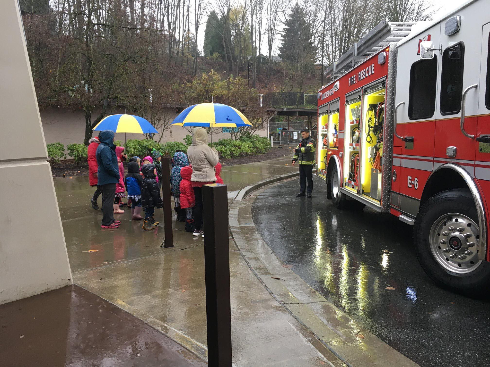
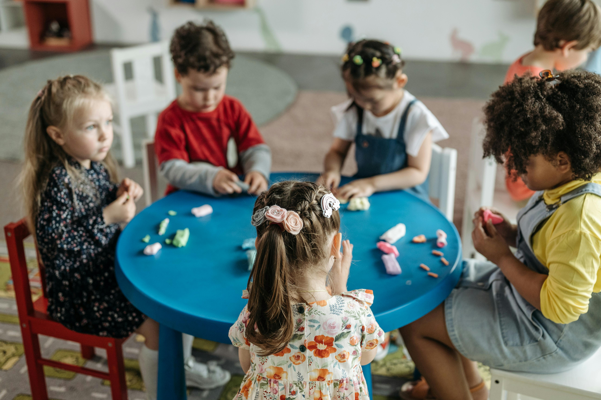

Kids Club
Our History
Kids Club was started in 1989 and has three locations in Abbotsford, with another location opened in Chilliwack in 2019.
Since 1989, Kids Club Child Care Centre Ltd has grown to become one of Abbotsford’s most respected childcare centres.
Our Philosophy
Our Staff are committed to providing fun and interesting programs which encourage opportunities for each child’s personal learning, engage the natural curiosity of children and stimulate the advancement of each child’s social, educational and personal growth and achievements.
Our Goals
- We believe in creating and maintaining an atmosphere of safety and mutual respect of others.
- We believe in family, and recognize that children flourish best in situations where they find love, acceptance and positive support from those they live with.
- We believe that each child is a unique individual, and each child has their own personality, gifts and abilities.

Little Wonders
Our History
Little Wonders has three locations in Abbotsford. The original location is our Gladys centre. Little Wonders Auguston was opened in summer of 2015, and Little Wonders Calvin followed in November of 2016.
Our Philosophy
At Little Wonders Montessori, we strive to offer a Montessori education in a safe community where children are encouraged to reach their full developmental potential. Little Wonders Montessori is committed to the academic, physical, and social growth of each child, which is the foundation of our educational approach.
In our Montessori childcare and preschool programs, we foster a nurturing and enriching environment where children are encouraged to explore and learn at their own pace.
Our carefully designed classrooms are filled with hands-on materials that promote independence, creativity, and critical thinking.
We believe in the power of play and exploration, allowing children to discover their unique interests and talents while cultivating a lifelong love for learning.
Our Goals
Our goals are to help your child socially, emotionally, and cognitively.
- Your child will begin to develop a caring attitude towards others and will begin to develop self-discipline through gradually learning to make wise choices.
- Little Wonders Montessori will help your child develop a positive view of self and others, and will help your child learn to verbally express both positive and negative feelings.
- Your child will be encouraged to build skills in listening and language development and understand concepts related to size, shape, space, color and distance. Reading and math readiness skills will be practiced.
